Training neural networks
Optional reading — a reusable loop and controlled comparisons
This work is licensed under a Creative Commons Attribution 4.0 International License.
What this reading is for
A network architecture is only one part of a learning algorithm. Batch size, learning rate, learning-rate schedule, loss function, preprocessing, and model selection all affect the result. This reading uses one channel-like velocity-profile problem to make those choices concrete. It complements Exercise 2, especially its comparisons of normalization, activations, and physical features.
The examples use PyTorch in the course Python environment. No CFD container, additional dataset, or GPU is needed. The supporting files are training_tools.py and training_strategies_experiments.py. They contain the reusable loop and the experiment definitions. The full, recorded comparisons below were executed on a CPU; they are measurements on this prototype, not claims that one strategy is best for every flow problem.
Before inspecting a comparison, predict what might change and why. Then check the prediction against the curves. A more complicated model or training procedure is useful only if the evidence supports it.
One prototype: channel-like velocity profiles
Let \(\eta=y/\delta\) range from the wall to the channel centerline, with \(\delta=0.5\,\mathrm{m}\), \(\nu=10^{-5}\,\mathrm{m^2\,s^{-1}}\), and \(Re_b=2\delta\bar U/\nu\). We generate 12 profiles for \(0.1\leq\bar U\leq1.0\,\mathrm{m\,s^{-1}}\) on 128 wall-normal cells, graded toward the wall. Define
\[ a=\frac{Re_b^{0.8}}{30},\qquad g(\eta)=\log\!\left[1+a(2\eta-\eta^2)\right],\qquad u_x(\eta_i)=\bar U\frac{g(\eta_i)}{\sum_j w_jg(\eta_j)}, \]
where \(w_j\) are normalized cell-width weights and \(\sum_jw_j=1\). The velocity is zero at the wall, its wall-normal derivative vanishes at the centerline, and its discrete volume-weighted mean is \(\bar U\). This is an explicitly constructed smooth profile family, not an OpenFOAM solution, Spalding’s relation, or a validated turbulence model. It supplies a reproducible training problem with a steep near-wall gradient and a Reynolds-number dependence.
We learn \((\eta,Re_b)\mapsto u_x\). Unlike the dimensionless target in Exercise 2, this prototype uses dimensional velocity as the target, so the common evaluation metric is directly an RMSE in m/s. The same loop also works with a dimensionless target if the evaluation metric correctly reverses all its transformations.
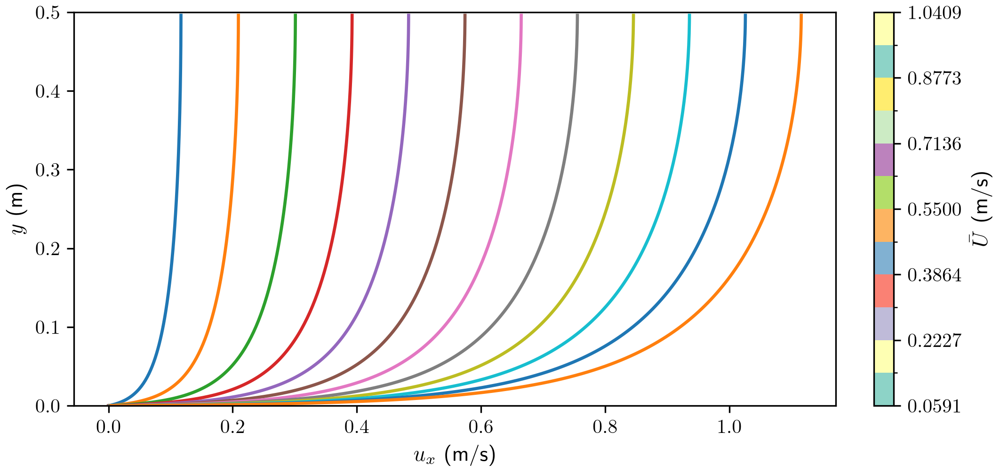
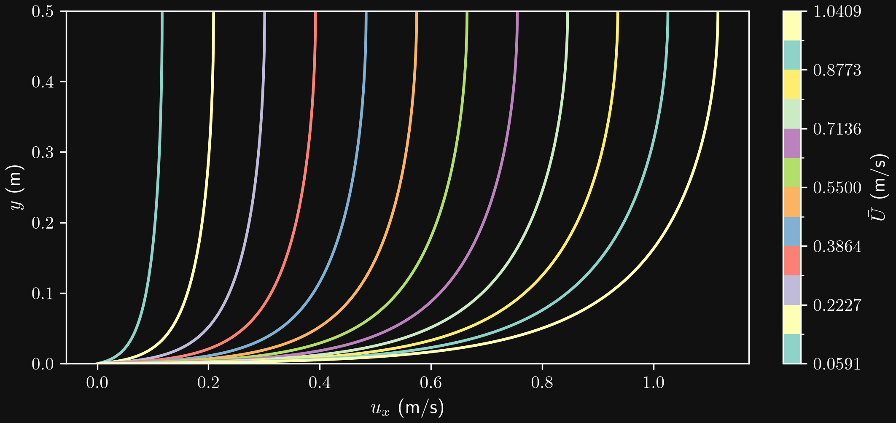
Eight complete profiles are used for training, two for validation, and two interior profiles for testing. The split is fixed before fitting input and target standardizers. Training targets receive small, fixed Gaussian perturbations with standard deviation \(0.002\bar U\); validation and test targets remain clean. This lets us distinguish a training observation from the known synthetic reference.
The robust-loss comparison later adds approximately 5% deliberately corrupted training targets. The underlying problem, scalers, and validation profiles remain unchanged; the corrupted experiment is identified separately from the main comparisons.
import torch
from torch import nn
from torch.utils.data import DataLoader
from training_tools import ProfileMLP, Standardizer, evaluate, fit, make_profile_problem
torch.set_num_threads(1) # Fixed CPU setting for these small examples.
problem = make_profile_problem()
train_data = problem["datasets"]["train"]
validation_data = problem["datasets"]["validation"]
test_data = problem["datasets"]["test"]
print(len(train_data), len(validation_data), len(test_data)) # 1024, 256, 256The standardizer stores training means and standard deviations. A constant feature is assigned scale one, rather than divided by zero. Save the scalers, feature definitions, and split identifiers with a trained model. Applying BatchNorm or LayerNorm inside a network does not replace this data preparation.
What one update actually means
For a batch \(\mathcal B\) of size \(B\), the mean squared error for a scalar output is
\[ \mathcal L_{\mathcal B}(\theta)=\frac{1}{B}\sum_{i\in\mathcal B} \left[f_\theta(x_i)-y_i\right]^2. \]
One optimizer update uses the gradient of this batch loss. An epoch visits the training dataset once. With \(N\) training samples, an epoch normally contains \(\lceil N/B\rceil\) updates if the final smaller batch is retained.
| Strategy | Samples used per update | Consequence |
|---|---|---|
| Full batch | All training samples | One update per epoch; the gradient uses the entire current dataset. |
| Mini-batch | A subset, for example 64 | More updates per epoch; gradients depend on which samples are grouped together. |
| Single-sample stochastic updates | One | High update frequency and substantial sampling variability; incompatible with ordinary training-mode BatchNorm1d on these feature vectors. |
An equal-epoch comparison without early stopping holds data exposure approximately fixed but gives smaller batches more optimizer updates. An equal-update comparison without early stopping holds the number of updates fixed but exposes larger batches to more samples. Neither also fixes runtime. For this reason, we record epochs, actual updates, samples seen, and elapsed time. Sampling noise, parameter initialization, and dropout are different sources of variability.
The displayed experiments use equal weight per cell sample; Exercise 2 asks you to state and justify your weighting choice. A graded mesh therefore puts more loss terms near the wall. Cell-volume weighting would define a different objective and must be applied consistently, rather than introduced only when a result looks unfavorable.
A reusable supervised training loop
The loop accepts a model, data loaders, a loss, an optimizer, and optionally a scheduler and common evaluation metric. It does not know the CFD case structure: split profiles and build features before creating loaders. It never receives a test loader.
The essential sequence is:
- Set
model.train()and iterate over shuffled training batches. - Clear gradients, compute predictions and loss, backpropagate, and update the parameters.
- Evaluate the current model with
model.eval()and disabled gradient recording. - Record a common validation metric, update the schedule at its specified frequency, and retain a copy of the best model state, including normalization buffers.
- Restore the validation-selected state after the training budget or optional early-stopping criterion is reached.
The actual implementation used for the comparisons is shown below. The complete supporting file also defines evaluate, the standardizer, and the model components.
from copy import deepcopy
from time import perf_counter
def fit(model, train_loader, validation_loader, loss_fn, optimizer, *, epochs=100,
metric_fn=None, scheduler=None, scheduler_interval='epoch',
max_updates=None, patience=20, device='cpu'):
"""Return validation-selected state and history; never access test data."""
if patience is not None and patience < 1:
raise ValueError('patience must be positive')
if epochs < 1 or (max_updates is not None and max_updates < 1):
raise ValueError('Training budgets must be positive')
if scheduler_interval not in ('epoch', 'update', 'validation'):
raise ValueError('Unknown scheduler interval')
plateau = isinstance(scheduler, torch.optim.lr_scheduler.ReduceLROnPlateau)
if scheduler is not None and plateau != (scheduler_interval == 'validation'):
raise ValueError('ReduceLROnPlateau requires validation stepping')
model.to(device)
history, best, best_value, stale, updates, samples = [], None, float('inf'), 0, 0, 0
start = perf_counter()
for epoch in range(1, epochs + 1):
model.train()
online_sum, online_n, lr_first, lr_last = 0., 0, None, None
for x, y in train_loader:
x, y = x.to(device), y.to(device)
if len(x) < 2 and any(isinstance(m, nn.BatchNorm1d) for m in model.modules()):
raise ValueError('BatchNorm training requires at least two samples per batch')
optimizer.zero_grad(set_to_none=True)
pred = model(x)
loss = loss_fn(pred, y)
if loss.ndim or not torch.isfinite(loss):
raise FloatingPointError('Loss must be a finite scalar mean')
loss.backward()
if any(p.grad is not None and not torch.isfinite(p.grad).all() for p in model.parameters()):
raise FloatingPointError('Non-finite gradient')
lr_last = optimizer.param_groups[0]['lr']
lr_first = lr_last if lr_first is None else lr_first
optimizer.step()
updates += 1
samples += len(x)
online_sum += len(x) * loss.item()
online_n += len(x)
if scheduler is not None and scheduler_interval == 'update':
scheduler.step()
if max_updates is not None and updates >= max_updates:
break
if not online_n:
raise ValueError('Empty training loader')
validation = evaluate(model, validation_loader, loss_fn, metric_fn, device)
# Fixed-order evaluation makes training and validation curves comparable.
training = evaluate(model, DataLoader(train_loader.dataset, batch_size=1024),
loss_fn, metric_fn, device)
if scheduler is not None:
if scheduler_interval == 'validation':
scheduler.step(validation['metric'])
elif scheduler_interval == 'epoch':
scheduler.step()
improved = validation['metric'] < best_value
if improved:
best_value, stale = validation['metric'], 0
best = {'model': deepcopy(model.state_dict()),
'optimizer': deepcopy(optimizer.state_dict()),
'scheduler': None if scheduler is None else deepcopy(scheduler.state_dict()),
'epoch': epoch, 'updates': updates}
else:
stale += 1
history.append({'epoch': epoch, 'updates': updates, 'samples_seen': samples,
'online_loss': online_sum / online_n,
'train_loss': training['loss'], 'validation_loss': validation['loss'],
'train_metric': training['metric'], 'validation_metric': validation['metric'],
'lr_first': lr_first, 'lr_last': lr_last,
'seconds': perf_counter() - start})
if (max_updates is not None and updates >= max_updates) or (patience is not None and stale >= patience):
break
model.load_state_dict(best['model'])
model.eval()
return {'history': history, 'best': best, 'best_validation_metric': best_value}loss_fn must return a scalar mean over equally weighted samples, with a fixed number of target components for regression. The code aggregates evaluation batches using their sample counts. Averaging the means of unequal-sized batches without those counts would give the small final batch too much weight. The online loss is accumulated while parameters change; the separately recorded training metric is evaluated with the final state of that epoch, in evaluation mode, like the validation metric.
The generic interface handles regression tensors (N, n_features) and (N, n_targets). It also handles classification if the network returns class logits and the caller uses CrossEntropyLoss with integer targets (N,) and a suitable common metric. It is not a complete PINN or reinforcement-learning trainer: those require additional residuals, sampling, or trajectory handling. If you introduce sample or class weights, use aggregation matching that weighted objective rather than assuming the present sample-count average is sufficient.
Minimal use on the prototype
device = torch.device("cuda" if torch.cuda.is_available() else "cpu")
torch.manual_seed(11)
train_loader = DataLoader(
train_data, batch_size=64, shuffle=True,
generator=torch.Generator().manual_seed(1011),
)
validation_loader = DataLoader(validation_data, batch_size=1024)
model = ProfileMLP(width=32, depth=3, activation="silu").to(device)
optimizer = torch.optim.Adam(model.parameters(), lr=0.003)
velocity_scale = problem["y_scaler"].scale.to(device)
def dimensional_mse(prediction, target):
return ((prediction - target) * velocity_scale).square().mean()
result = fit(
model, train_loader, validation_loader, nn.MSELoss(), optimizer,
epochs=240, metric_fn=dimensional_mse, device=device,
)
validation_rmse = result["best_validation_metric"] ** 0.5This selects a CUDA GPU when available and otherwise uses the CPU. The model is moved before constructing its optimizer, and the metric scale is placed on the same device. The datasets stay in CPU memory; fit transfers each training and validation batch to device. The recorded comparisons here were executed on CPU.
result["best"] includes model, optimizer, and scheduler states at the selected epoch. For inference, save the model state, architecture settings, and scalers. Exact continuation of a shuffled stochastic run additionally requires random-generator/sampler state and a defined continuation point; the example does not implement an exact restart facility. A checkpoint selected by validation error is also distinct from the last training checkpoint.
Controlled comparisons and how to read them
The main reference model has three hidden layers of width 32 with SiLU activations, an affine output, batch size 64, Adam with learning rate 0.003, and MSE loss. There is no weight decay. The maximum budget is 240 epochs, with early-stopping patience 20. Each setting is repeated with seeds 11, 22, and 33. Data generation and the profile split are fixed; seed changes affect initialization, shuffling, and stochastic layers.
A shared seed controls a random-number stream; it does not make networks with different parameter layouts start from identical functions. Parameter counts are recorded with the results. These are modest, controlled comparisons with fixed settings, not equally exhaustive tuning of every method.
Curves show clean-validation dimensional RMSE: the solid line is the mean over seeds with recorded evaluations at that point, and the shading spans their minimum and maximum. Curves end when all seeds have stopped; stopped histories are not extended. Values are linearly interpolated between recorded evaluations where needed. It is training-run variation, not a predictive confidence interval. Checkpoints are selected by the common validation metric, not by whichever training loss happens to be numerically smallest. The test profiles are used only after selecting a clean-data configuration by its mean best validation MSE across seeds.
Batch size: compare epochs and updates
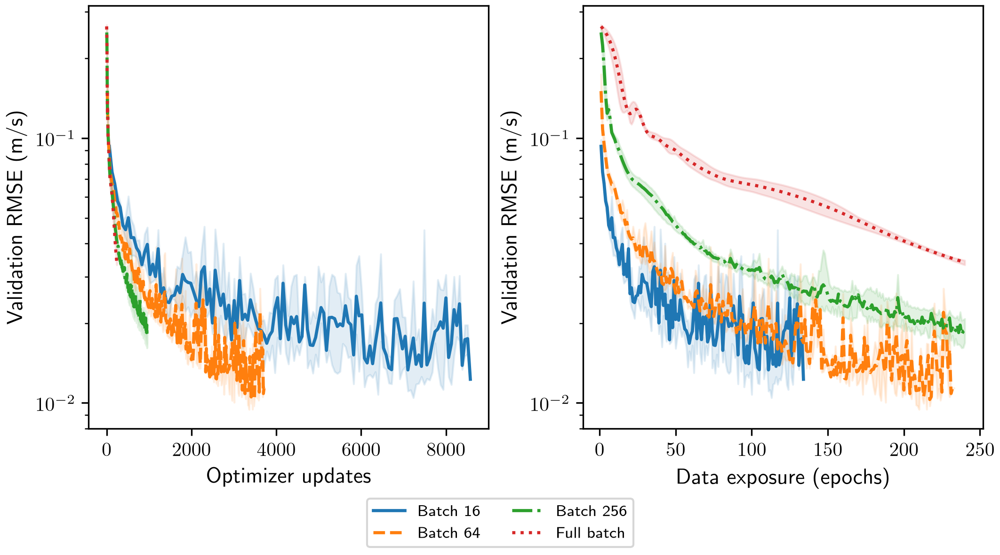
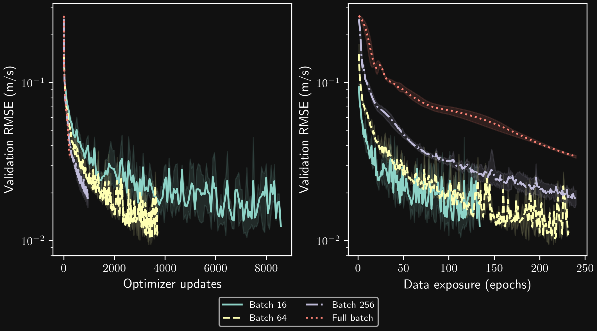
The two axes tell different stories: one counts optimizer updates, the other counts cumulative data exposure in epoch equivalents. Before early stopping, the maximum is 240 updates for full-batch training and 15,360 for batch size 16. If it learns more slowly per epoch, first separate the number of updates from the quality of each gradient estimate. Small batches can make the path noisier; they do not guarantee better generalization or faster execution.
Validation is recorded at epoch boundaries (including a final partial epoch), so runs have different evaluation spacing on the update axis. Under a fixed-update budget, the number of checkpoint-selection opportunities also differs. Early stopping can also change the realized budget. The results table records actual update ranges and final validation errors separately from the best-checkpoint errors; this is a common maximum-budget comparison, not a guarantee of equal work.
A second comparison allows each run up to 1,600 optimizer updates, subject to the same early-stopping rule. Larger batches then see more training samples, and the number of completed epochs differs:
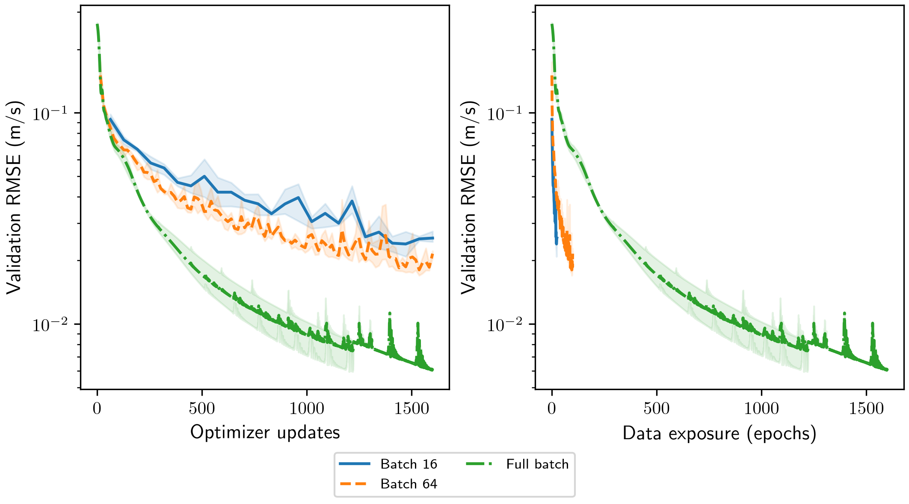
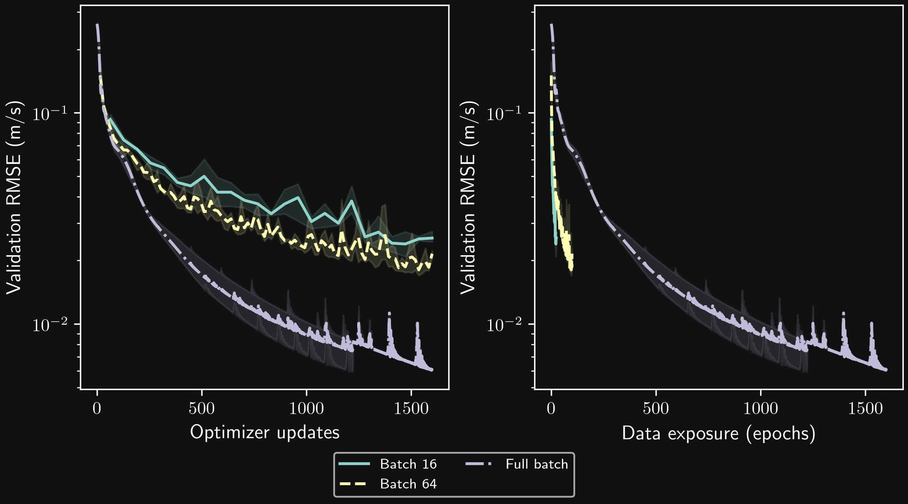
The best-checkpoint ranking changes between the epoch-capped and update-capped comparisons. Early stopping also means that actual update counts can differ within each group. The latter also sees more samples per update. The change in ranking shows why the comparison budget must be stated.
Learning rate: step length matters
The learning rate controls the scale of a parameter update. Too small a rate may leave a model under-trained within the available budget; too large a rate can cause oscillations or divergence. Adam adapts updates per parameter but still needs a sensible global learning rate. A larger network, a different activation, target scaling, and batch size can all change which rate works well.
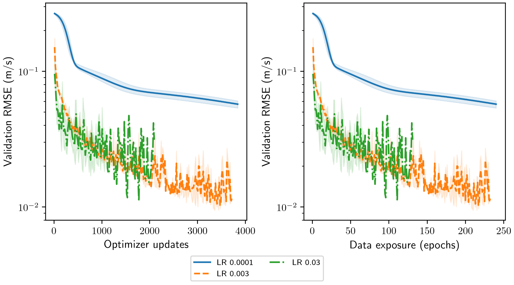
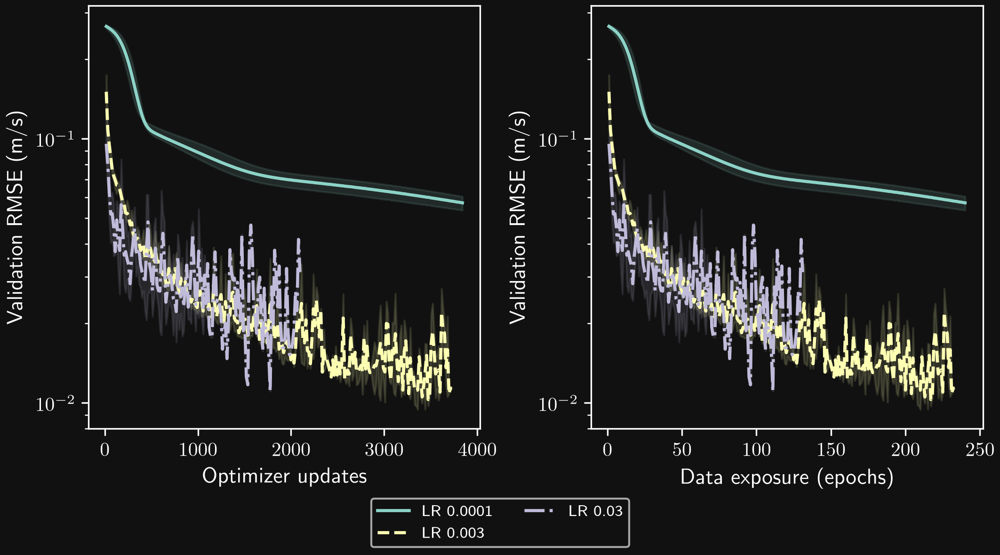
All three rates use the same architecture and 240-epoch budget. A finite but poor curve is a valid outcome, not a reason to remove that run. The helper explicitly raises on non-finite losses or gradients. If a setting diverges, record the failure and change it as a new experiment.
Learning-rate schedules
| Schedule | Change rule in this example | When step is called |
|---|---|---|
| Constant | Keep 0.003 | No scheduler |
| Step decay | Multiply by 0.3 after every 80 epochs | After each epoch |
| Cosine decay | Smoothly decrease toward \(10^{-5}\) over the planned update budget | After each optimizer update |
| Validation plateau | Halve the rate after the monitored validation MSE stops improving for the configured patience | After validation, with the metric |
Schedulers are stepped after the corresponding optimizer work, not before the first optimizer update. ReduceLROnPlateau consumes the validation metric; StepLR and CosineAnnealingLR do not. A per-epoch schedule cannot be compared with a per-update schedule merely by giving their counters the same integer. The PyTorch optimizer documentation describes these interfaces and ordering.
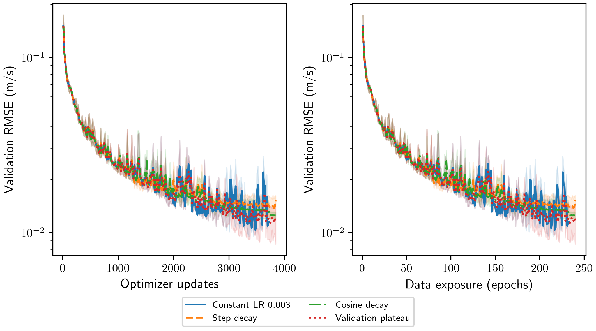
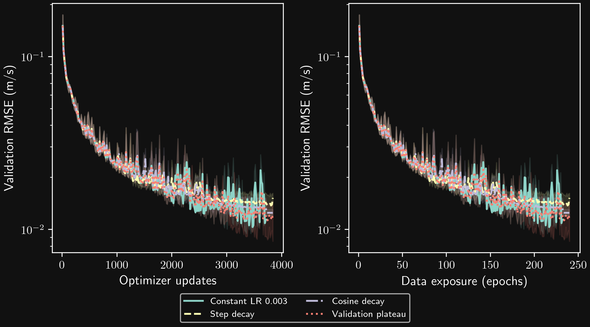
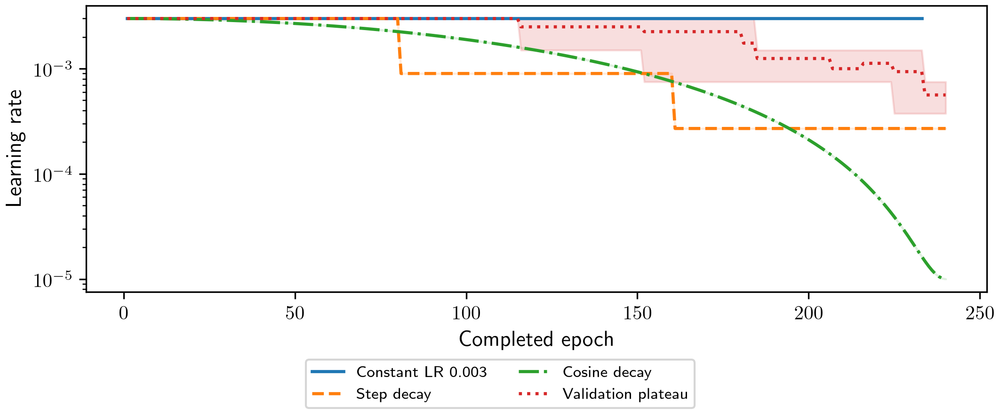
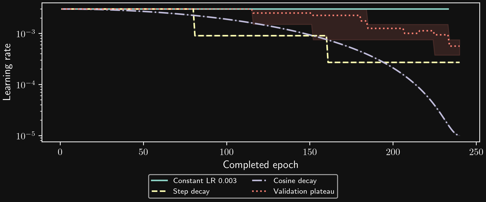
With these budgets and stopping rules, plateau decay has lower mean best validation error than the constant-rate reference; step and cosine decay give different outcomes. These observations concern the stated rates and budgets; they do not establish a general ranking of schedules.
A decreasing rate can help refine a fit, but reducing it before useful progress has been made can also freeze a poor solution. Plateau scheduling and early stopping serve different purposes: one changes update sizes, while the other terminates training. The default is patience=20: training stops after 20 consecutive validation evaluations without a new best metric. Set patience=None to disable early stopping. Each run has a maximum of 240 epochs (or 1,600 updates in the update-budget comparison), and restores its best validation checkpoint. Scheduler patience is separate and controls learning-rate reductions.
When the epoch cap is reached: if early stopping has not triggered, optimization may still benefit from more epochs, especially if validation error continues to decrease. This is a reason to try a larger budget, not a guarantee of improved generalization. The maximum epoch budget is deliberately kept modest in this educational notebook so the comparisons remain practical to run.
Architecture variants
The model factory makes the modifications explicit. depth=3 means one input-to-hidden layer followed by two hidden blocks, then the affine output.
class HiddenBlock(nn.Module):
def __init__(self, width, normalization, activation, dropout, residual):
super().__init__()
norm = {'none': nn.Identity, 'layer': lambda: nn.LayerNorm(width),
'batch': lambda: nn.BatchNorm1d(width)}[normalization]
self.branch = nn.Sequential(nn.Linear(width, width), norm(), activation(),
nn.Dropout(dropout))
self.residual = residual
def forward(self, x):
out = self.branch(x)
return x + out if self.residual else out
class ProfileMLP(nn.Module):
def __init__(self, n_in=2, n_out=1, width=32, depth=3, normalization='none',
residual=False, concatenate=False, dropout=0., activation='silu'):
super().__init__()
if depth < 1:
raise ValueError('depth must be positive')
act = {'tanh': nn.Tanh, 'relu': nn.ReLU, 'silu': nn.SiLU}[activation]
self.input = nn.Sequential(nn.Linear(n_in, width), act())
self.blocks = nn.ModuleList([
HiddenBlock(width, normalization, act, dropout, residual)
for _ in range(depth - 1)
])
self.concatenate = concatenate
self.output = nn.Linear(width + (n_in if concatenate else 0), n_out)
def forward(self, x):
h = self.input(x)
for block in self.blocks:
h = block(h)
if self.concatenate:
h = torch.cat((h, x), dim=-1)
return self.output(h)| Variant | What changes | What to watch |
|---|---|---|
| Plain MLP | Repeated affine maps and activations | A useful reference before adding components. |
| LayerNorm | Normalize hidden features within each sample, with learned scale and offset | No batch statistics; can still change how scalar information is represented. |
| BatchNorm | Normalize hidden features using training-batch statistics and retain running statistics for evaluation | Batch composition, small batches, and training/evaluation modes matter. |
| Additive residual connection | Pass \(h+F(h)\) to the next block | Shapes must match; the implemented width is constant. |
| Concatenated skip connection | Pass the original input to the output layer alongside the final hidden representation | Unlike addition, concatenation increases the next layer’s input dimension. |
| Dropout | Randomly zero hidden activations during training, with the module’s scale compensation | Evaluation disables dropout; regularization can underfit a small smooth dataset. |
BatchNorm1d uses batch statistics during training and, with the default configuration used here, running statistics in evaluation. LayerNorm uses statistics within each input in both modes. Their behavior is therefore not interchangeable. The helper rejects a singleton training batch when BatchNorm is present; choose a compatible batch partition instead of silently losing samples.
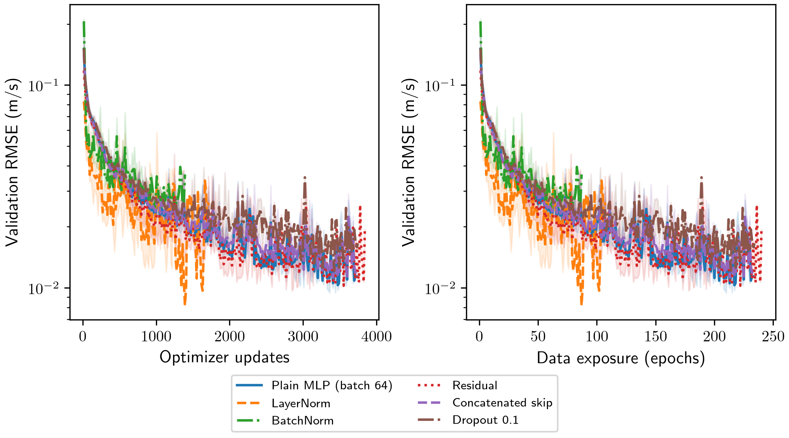
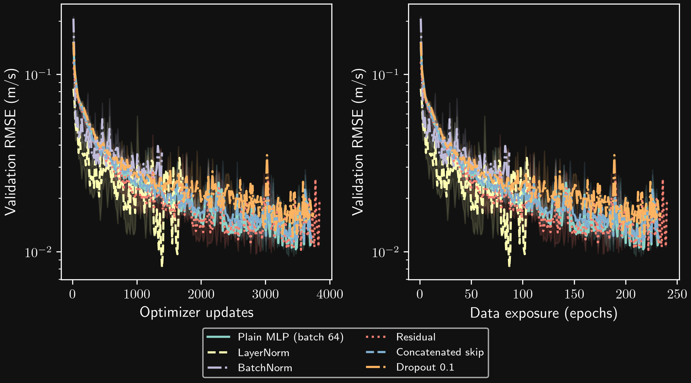
The residual variant has the same trainable parameter count as the plain model in this implementation; normalization and concatenated-input variants add parameters. Dropout adds no trainable parameters but changes the training process. None is guaranteed to improve this small regression problem. A fair follow-up would give each architecture a comparable validation-based tuning budget.
Activation functions also matter. The following holds width, depth, normalization, optimizer, and budget fixed while replacing SiLU with tanh or ReLU:
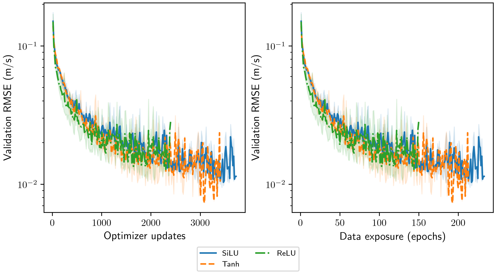
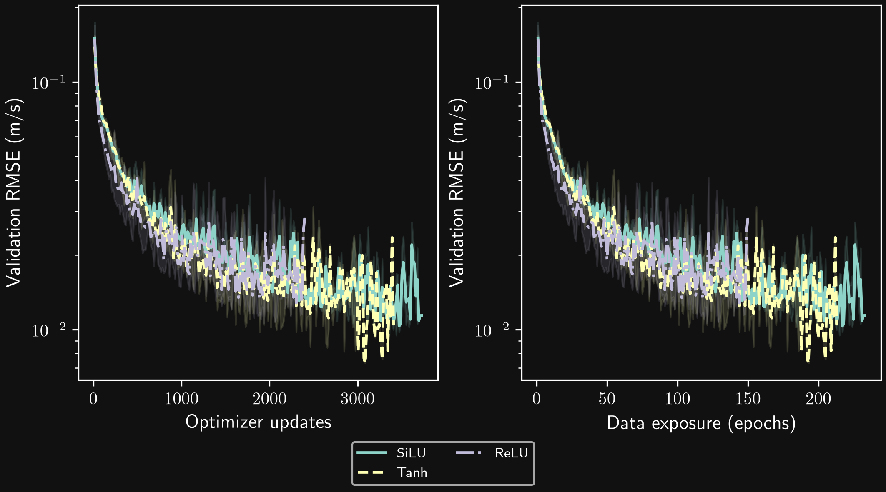
Loss functions: what errors should the model emphasize?
For a scalar residual \(r=\hat y-y\), MSE uses \(r^2\), MAE uses \(|r|\), and Huber loss uses
\[ \ell_\delta(r)= \begin{cases} \frac12r^2,& |r|\leq\delta,\\ \delta\left(|r|-\frac12\delta\right),& |r|>\delta. \end{cases} \]
MSE gives a growing gradient to large residuals. MAE gives a gradient with constant magnitude away from zero. Huber combines a quadratic center with linear tails; it can reduce the influence of large corrupted targets while retaining a smooth central region. These objectives can favor different conditional statistics and should be chosen to match the problem, rather than only to obtain a smaller displayed training number. PyTorch HuberLoss defines the threshold convention used here.
For this comparison, all three losses see the same corrupted training targets: every twentieth scaled target receives an offset of 3. The Huber threshold is 0.2 in standardized target units, corresponding to \(0.2s_y\) m/s, where \(s_y\) is the training target standard deviation. Scalers remain fixed across this controlled corruption experiment. A reference MSE run without outliers appears as a separate clean-data control in the figure.
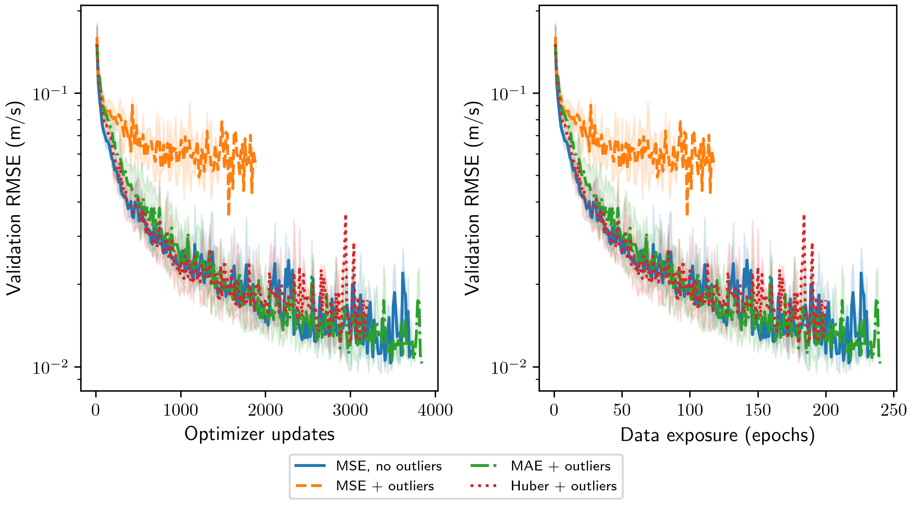
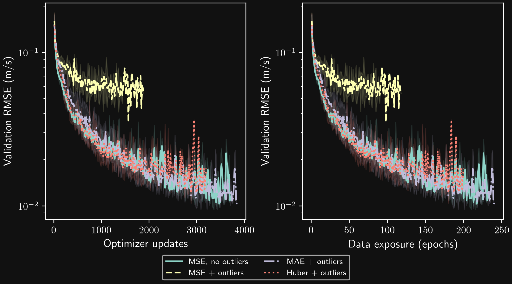
The corrupted-target MSE runs have substantially higher validation error than the MAE and Huber runs here. The clean MSE control separates the effect of target corruption from changing the loss.
The vertical axis is the same clean-validation RMSE in m/s for every loss. Comparing raw MAE, MSE, and Huber values would mix different objectives and scales. Robust losses do not repair physically inconsistent labels, poor mesh resolution, or an unrepresentative dataset. Here the corruption is known because we introduced it; real data require independent quality checks.
Combining training strategies
A strategy that helps on its own need not help in combination: normalization changes the activations seen by later layers, and the schedule changes the optimization path. This comparison tests a small factorial set: LayerNorm with SiLU, tanh, or ReLU, each with constant learning rate 0.003 or validation-based plateau decay. LayerNorm was the strongest individual architecture in the preceding comparison; all three activations are retained rather than assuming the individually best activation remains best with normalization.
All six combinations use the same training-only scalers, profile split, MSE objective, batch size 64, width 32, three hidden layers, a maximum of 240 epochs, and seeds 11, 22, and 33. Plateau decay uses factor 0.5, patience 10, and minimum learning rate 0.00001. The LayerNorm–SiLU–constant configuration reuses the architecture reference. Each run restores its best validation checkpoint. Selection across configurations uses mean best validation MSE over the three seeds.
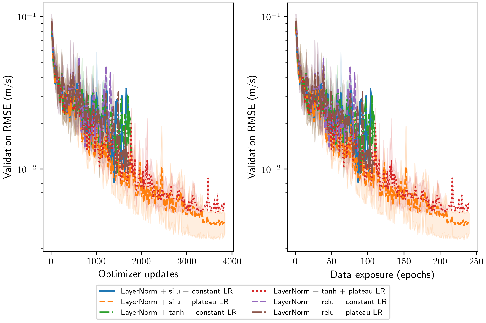
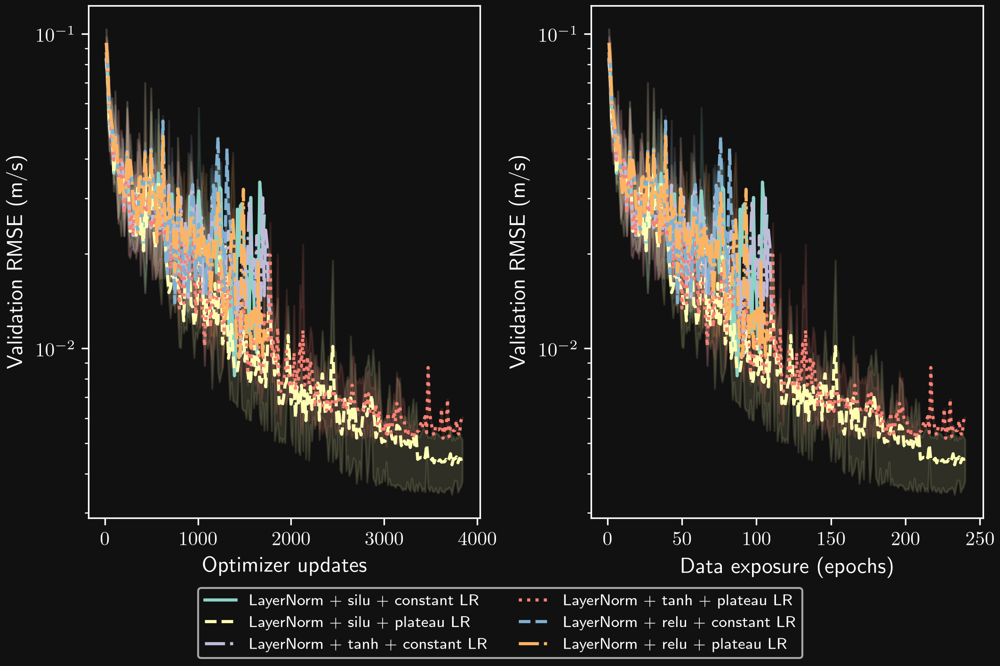
| Activation | Schedule | Best validation RMSE (m/s) |
|---|---|---|
| SiLU | constant | 0.0111 ± 0.0025 |
| SiLU | plateau | 0.0047 ± 0.0011 |
| tanh | constant | 0.0116 ± 0.0043 |
| tanh | plateau | 0.0057 ± 0.0011 |
| ReLU | constant | 0.0166 ± 0.0068 |
| ReLU | plateau | 0.0136 ± 0.0050 |
The SiLU and tanh variants achieve lower mean best validation errors with plateau decay here; the ReLU result also changes with the schedule. The strongest combination remains LayerNorm + SiLU + plateau decay. These effects depend on the combination and the stopping rule, rather than simply adding gains from individual comparisons.
Recorded results and final evaluation
The compact table below records parameter counts, actual update ranges across seeds, and validation RMSE variation for every comparison. The same reference run is reused between groups rather than retrained under a different random state. The detailed result record contains complete histories, seeds, configurations, timings, and source fingerprints.
| Comparison | Setting | Parameters | Actual updates (range) | Best validation RMSE (m/s) | Final validation RMSE (m/s) |
|---|---|---|---|---|---|
| batch | Batch 16 | 2241 | 8000–8576 | 0.0113 ± 0.0008 | 0.0208 ± 0.0091 |
| batch | Batch 64 | 2241 | 1984–3728 | 0.0121 ± 0.0042 | 0.0167 ± 0.0050 |
| batch | Batch 256 | 2241 | 960 | 0.0178 ± 0.0023 | 0.0188 ± 0.0020 |
| batch | Full batch | 2241 | 240 | 0.0340 ± 0.0007 | 0.0340 ± 0.0007 |
| update budget | Batch 16 | 2241 | 1600 | 0.0230 ± 0.0019 | 0.0255 ± 0.0017 |
| update budget | Batch 64 | 2241 | 1600 | 0.0174 ± 0.0004 | 0.0215 ± 0.0009 |
| update budget | Full batch | 2241 | 1222–1600 | 0.0066 ± 0.0010 | 0.0068 ± 0.0009 |
| learning rate | LR 0.0001 | 2241 | 3840 | 0.0572 ± 0.0035 | 0.0572 ± 0.0035 |
| learning rate | LR 0.003 | 2241 | 1984–3728 | 0.0121 ± 0.0042 | 0.0167 ± 0.0050 |
| learning rate | LR 0.03 | 2241 | 832–2096 | 0.0164 ± 0.0051 | 0.0294 ± 0.0071 |
| schedule | Constant LR 0.003 | 2241 | 1984–3728 | 0.0121 ± 0.0042 | 0.0167 ± 0.0050 |
| schedule | Step decay | 2241 | 3840 | 0.0137 ± 0.0018 | 0.0152 ± 0.0009 |
| schedule | Cosine decay | 2241 | 3712–3840 | 0.0133 ± 0.0016 | 0.0134 ± 0.0017 |
| schedule | Validation plateau | 2241 | 3440–3840 | 0.0108 ± 0.0026 | 0.0111 ± 0.0031 |
| architecture | Plain MLP (batch 64) | 2241 | 1984–3728 | 0.0121 ± 0.0042 | 0.0167 ± 0.0050 |
| architecture | LayerNorm | 2369 | 1216–1712 | 0.0111 ± 0.0025 | 0.0269 ± 0.0115 |
| architecture | BatchNorm | 2369 | 880–1392 | 0.0253 ± 0.0029 | 0.0334 ± 0.0028 |
| architecture | Residual | 2241 | 2416–3840 | 0.0102 ± 0.0005 | 0.0145 ± 0.0042 |
| architecture | Concatenated skip | 2243 | 3296–3728 | 0.0113 ± 0.0010 | 0.0165 ± 0.0056 |
| architecture | Dropout 0.1 | 2241 | 2048–3744 | 0.0157 ± 0.0031 | 0.0187 ± 0.0018 |
| activation | SiLU | 2241 | 1984–3728 | 0.0121 ± 0.0042 | 0.0167 ± 0.0050 |
| activation | Tanh | 2241 | 2208–3408 | 0.0098 ± 0.0025 | 0.0137 ± 0.0042 |
| activation | ReLU | 2241 | 2256–2400 | 0.0108 ± 0.0003 | 0.0236 ± 0.0054 |
| combined | LayerNorm + silu + constant LR | 2369 | 1216–1712 | 0.0111 ± 0.0025 | 0.0269 ± 0.0115 |
| combined | LayerNorm + silu + plateau LR | 2369 | 3344–3840 | 0.0047 ± 0.0011 | 0.0052 ± 0.0015 |
| combined | LayerNorm + tanh + constant LR | 2369 | 832–1776 | 0.0116 ± 0.0043 | 0.0144 ± 0.0031 |
| combined | LayerNorm + tanh + plateau LR | 2369 | 2912–3840 | 0.0057 ± 0.0011 | 0.0064 ± 0.0017 |
| combined | LayerNorm + relu + constant LR | 2369 | 640–1392 | 0.0166 ± 0.0068 | 0.0281 ± 0.0143 |
| combined | LayerNorm + relu + plateau LR | 2369 | 1088–1760 | 0.0136 ± 0.0050 | 0.0253 ± 0.0129 |
| loss | MSE + outliers | 2241 | 1360–1888 | 0.0401 ± 0.0043 | 0.0521 ± 0.0074 |
| loss | MAE + outliers | 2241 | 3408–3840 | 0.0098 ± 0.0003 | 0.0143 ± 0.0075 |
| loss | Huber + outliers | 2241 | 2352–3200 | 0.0122 ± 0.0016 | 0.0170 ± 0.0032 |
Across the individual and combined clean-data comparisons, LayerNorm + SiLU + validation-based plateau decay has the lowest mean best validation MSE. Its held-out test RMSE is 0.0055 ± 0.0014 m/s (mean ± sample standard deviation over three seeds). Batch size is 64 and the initial learning rate is 0.003. Each seed uses its own validation-selected checkpoint. The suite executed 81 distinct runs in 23.5 seconds with PyTorch 2.14.1+cpu, using 16 parallel CPU workers with one thread per worker. This elapsed time includes evaluation and saving but excludes figure generation; it is not a portable runtime estimate.
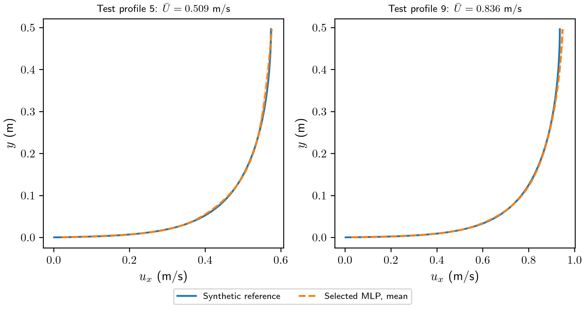
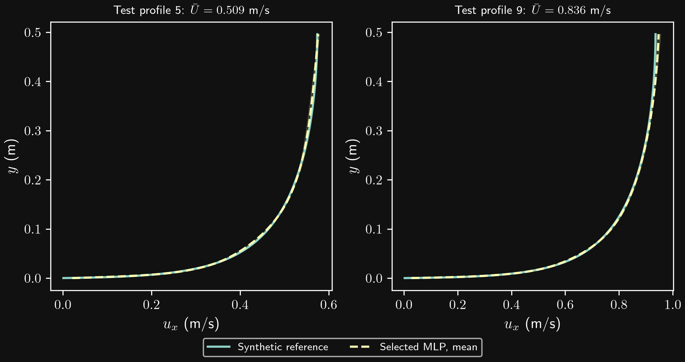
Both complete test profiles (indices 5 and 9, 128 points each) contribute to the reported test RMSE. Test data are excluded from training, checkpoint selection, and configuration selection. However, this reading was extended after the earlier model’s test results had been inspected, so this is an exploratory extended comparison rather than a fresh blind test. A new untouched dataset would be needed for an independent confirmation.
These are two interior profiles of a synthetic family. The result does not establish CFD accuracy, extrapolation, or performance on a new physical regime. As in Exercise 2, a simple physical or interpolation baseline can be a strong competitor; the purpose here is to understand training behavior.
Final run: let early stopping decide
The selected LayerNorm + SiLU + validation-based plateau schedule is trained with a generous 50,000-epoch maximum and early-stopping patience 20. The architecture, data, scalers, Adam settings, batch size 64, seeds, and plateau scheduler are unchanged. This run asks when the stopping rule terminates training; it does not select a new configuration using test errors. The three independent seeds run concurrently, using one CPU thread each.
| Seed | Stopped at epoch | Best checkpoint epoch | Validation RMSE (m/s) | Test RMSE (m/s) |
|---|---|---|---|---|
| 11 | 631 | 611 | 0.00442 | 0.00460 |
| 22 | 1076 | 1056 | 0.00244 | 0.00286 |
| 33 | 209 | 189 | 0.00563 | 0.00683 |
All three runs triggered early stopping, exactly 20 epochs after their last best validation checkpoint; none reached the cap. The restored checkpoints give a test RMSE of 0.0048 ± 0.0020 m/s across seeds. Seed 33 stops at the same checkpoint as in the capped benchmark, so a larger maximum does not automatically produce a different model.
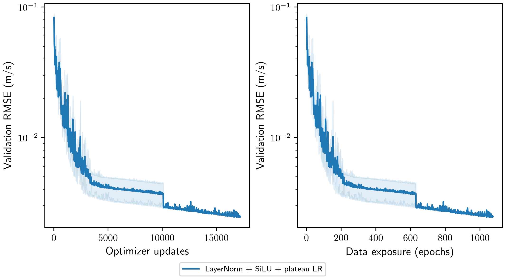
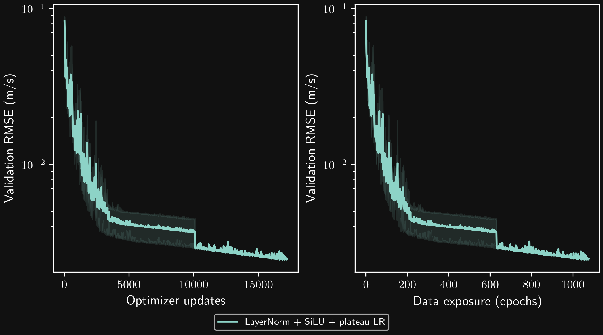
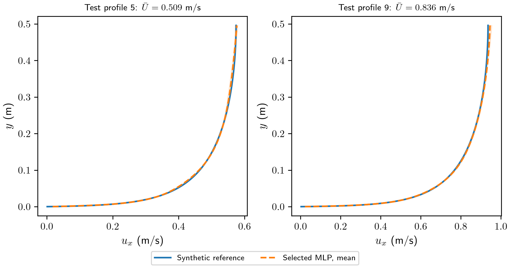
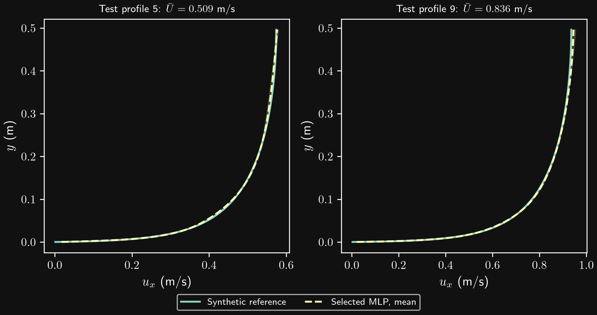
Patience 20 is a practical stopping choice, not evidence that optimization has converged. In the separate 5,000-epoch check with early stopping disabled, the same model achieved mean test RMSE 0.00170 m/s. Here the stopping rule terminates earlier and the error is higher. A temporary validation plateau can therefore stop training before later improvements; a larger patience is a separate training choice to assess using validation data. The previously inspected test results make this an exploratory comparison.
Reproduce this final run using training_final_experiment.py:
python notebooks/training_final_experiment.py notebooks/media/training-strategies-results.json --epochs 50000 --output exercises/my_final_trainingThe runner checks that patience actually triggered and reports an error if the cap is reached. The final result record contains the full histories and source fingerprints.
How much do additional training profiles help?
The best architecture and schedule are held fixed while the number of complete training profiles increases. The nested profile-index sets are [0, 11], [0, 4, 7, 11], [0, 1, 4, 6, 7, 11], and [0, 1, 3, 4, 6, 7, 10, 11]. All sets cover the same bulk-velocity interval; additional profiles fill its interior. Each profile contributes the same 128 wall-normal samples. This changes the number and placement of training profiles, rather than refining their spatial grid.
Validation profiles 2 and 8 remain fixed, with 256 clean samples in total. Test profiles 5 and 9 are excluded from training and are not evaluated in this comparison. The same noisy training observations are used wherever subsets overlap. Input and target standardizers are refitted using only each subset. LayerNorm, SiLU, Adam, batch size 64, initial learning rate 0.003, plateau scheduling, and seeds 11, 22, and 33 stay unchanged. The maximum is 50,000 epochs, with early-stopping patience 20; all runs stop through patience.
| Training profiles | Training samples | Best validation RMSE (m/s) | Actual epochs (range) | Actual updates (range) |
|---|---|---|---|---|
| 2 | 256 | 0.1371 ± 0.0274 | 21–28 | 84–112 |
| 4 | 512 | 0.0207 ± 0.0032 | 74–104 | 592–832 |
| 6 | 768 | 0.0101 ± 0.0034 | 141–170 | 1692–2040 |
| 8 | 1024 | 0.0042 ± 0.0016 | 209–1076 | 3344–17216 |
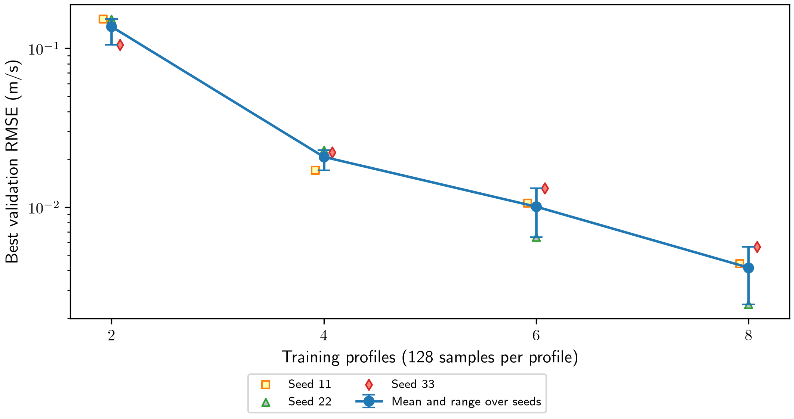
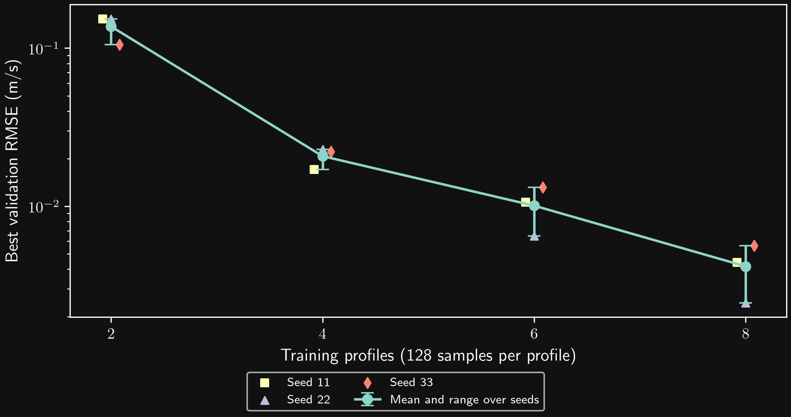
Validation error decreases substantially as interior training profiles are added in this example. The range reflects three training seeds, not uncertainty across alternative dataset selections. This is the behavior of the complete training procedure: larger datasets also give more updates per epoch, and early stopping changes the realized optimization budget. It therefore does not isolate data quantity from optimization effort or establish a universal scaling law. Two validation profiles provide limited coverage of generalization behavior.
Reproduce with training_data_scaling.py:
python notebooks/training_data_scaling.py notebooks/media/training-strategies-results.json --output exercises/my_data_scaling
python notebooks/training_data_scaling_plots.py exercises/my_data_scaling/results.jsonThe data-size result record includes subset identifiers, histories, and source fingerprints. training_data_scaling_plots.py regenerates the figure.
Apply the loop to Exercise 2
- Replace the synthetic generator with the quality-checked CFD profiles, preserving whole-profile splits and the chosen sample weighting.
- Define features and targets, fit scalers on training data only, and create
TensorDatasetobjects with matching shapes and dtypes. - Start with a plain model and one reasonable learning rate. Verify an inverse transformation and one prediction independently.
- Change one strategy at a time and record both update count and data exposure. Compare seeds and inspect dimensional profiles as well as aggregate errors.
- Use validation data to choose checkpoints and settings. Freeze everything before evaluating test or extrapolation profiles.
To reproduce the full suite from the repository root:
source ml-cfd/bin/activate
python notebooks/training_strategies_experiments.py --epochs 240 --seeds 11 22 33 --output exercises/my_training_comparisonsThe experiment script defaults to using all available CPUs for independent configuration/seed jobs, with one CPU thread per job. Use --workers 1 --threads 1 for a serial run matching the execution mode of the recorded timings, or set --workers and --threads explicitly to limit resources. The minimal single-model example above uses a CUDA GPU when available; the comparison script runs CPU jobs.
Use a new output directory for each run. For a small pilot, select a group and fewer epochs, for example --epochs 8 --seeds 11 --groups architecture. A pilot establishes execution behavior, not converged performance. The raw checkpoints stay in your exercise folder; the published reading includes only figures and the result record. The figures can be regenerated with training_strategies_plots.py, using python notebooks/training_strategies_plots.py exercises/my_training_comparisons/results.json. This plotting script uses the course’s figure_style.py and figure_utils.py helpers and defaults to LaTeX text rendering.